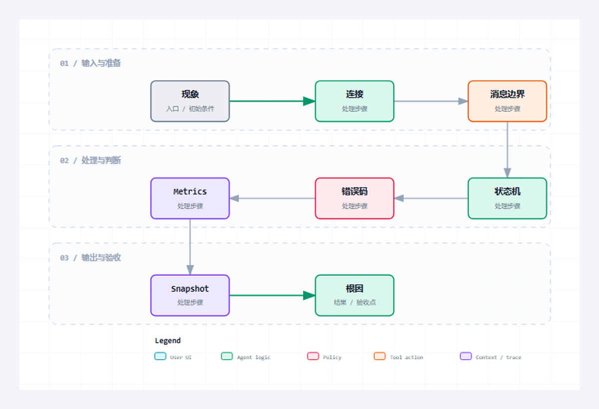

把 HTTP 故障按监听、连接、消息边界、构造发送和业务响应五层拆开，建立一张可以直接用于现场的反查表。
适合谁收藏
- 需要按证据链完成 HTTP 现场排障的工程师。
- 需要复核 32 个源码文件覆盖范围的人。
- 准备把整套 HTTP 工程迁移到目标运行时并重新验收的读者。
综合收束，第 1/2 篇；主系列第 27/28 篇。
现场问题
HTTP 不通时，最慢的办法是从第一行代码重新读。最快的办法是先确认故障停在哪一层，再用状态、错误码、原始报文、指标和连接快照交叉验证。
同一个“没有响应”，可能是端口未监听、连接槽没激活、Header 未完整、Body 长度不足、Builder 拒绝超限消息，或者 TCP_Write 失败。
先给结论
排障顺序固定为：先连接证据，再消息边界，再角色状态机，最后业务结果。任何层没有证据，就不要越层猜测。

读图重点
这张图只压缩本篇的判断路径。读图时先找“无法连接”对应的输入边界，再沿着“连接快照、缓冲区和复用策略”检查状态怎样推进，最后用“清理时机与 pipeline 越界”确认输出是否已经形成验收证据。
把对象和边界分开
| 对象或阶段 | 工程职责 | 现场观察点 |
|---|---|---|
| 无法连接 | ServerState、监听句柄、NBS error | 监听地址、端口和使能 |
| 连接后无响应 | 槽位状态、RxMessage、Header 结束位置 | Read 与半包边界 |
| 返回 400 | E_HttpError、原始 Header | Host、长度、TE/CL 冲突 |
| Client 一直 Busy | ClientState、Tx/Rx 长度、超时 | 发送完成和响应边界 |
| 偶发串包 | 连接快照、缓冲区和复用策略 | 清理时机与 pipeline 越界 |
一次现场排障应该怎样落笔
假设现象是“Client 一直 Busy，八秒后超时”。先不要改超时值，按下面顺序取证：
- 看 ClientState 是否已经越过 Connect。如果没有，问题仍在地址、端口或 TCP 服务。
- 看 TxMessage 和发送偏移是否达到完整请求长度。如果没有，检查 Write 状态和 NBS error。
- 看 RxMessage 是否出现状态行和 Header 结束符。如果只出现一部分，继续追接收分片。
- 看 Content-Length、chunked 和 Connection 三个边界字段怎样组合。如果边界不清楚，Parser 不应完成。
- 最后把错误码、Metrics 增量和原始响应放在一起，判断这是超时、协议错误还是业务状态码。
这五步的价值在于每一步都能排除一层。只要证据链停在某一步，后面的业务代码就不应成为首要怀疑对象。
固定一张故障记录表
| 记录项 | 必须保留的内容 | 用来排除什么 |
|---|---|---|
| 触发输入 | URL、方法、Header、Body 与触发时刻 | 输入变化和重复执行 |
| 连接证据 | 目标地址、端口、句柄、连接状态与 NBS error | 监听、路由和底层连接故障 |
| 消息证据 | 原始 Tx/Rx、累计长度、Header 结束位置 | 半包、粘连和长度不一致 |
| 角色状态 | Server/Client 状态、槽位、超时阶段 | 状态机未推进或清理过早 |
| 协议结果 | HTTP error、状态码、响应 Header 与 Body | 协议错误和业务结果混淆 |
| 回归结果 | 同一输入修复前后差异、计数变化 | 修复是否真正命中根因 |
记录时不要只截最终错误画面。一次故障至少要保留触发前状态、首次出现异常的周期和恢复后的下一笔正常事务。这样才能区分“本次请求失败”“错误已锁存但事务已恢复”和“资源仍未释放”三种情况。若修改后只用另一条 URL、另一种连接策略或另一台服务验证，就没有完成同场景回归；原问题仍可能存在。
同场景回归还要检查副作用：失败计数是否只增加一次、连接槽是否回到可接入状态、下一笔正常请求是否复用了干净缓冲区、Client 的 Done/Error 脉冲是否只持续约定周期。主现象消失但这些副作用仍在，说明修复只绕过了故障入口，没有恢复事务生命周期。
从协议约束到代码职责
协议约束
排障顺序固定为：先连接证据，再消息边界，再角色状态机，最后业务结果。任何层没有证据，就不要越层猜测。 这条结论先限定消息什么时候成立，再限定哪个角色可以消费结果。若绕过协议边界直接驱动业务，半包、超时、重复执行和连接残留就会进入应用层。
工程抽象
E_HttpError 把协议错误放在 10 到 18，把 TCP 与超时错误放在 100 以上。这个分区使排障脚本和在线变量可以快速判断问题属于协议层还是传输层。
Metrics 负责回答“发生了多少次”，Snapshot 负责回答“最后一次发生在哪个槽位、什么状态、什么路径”。两者缺一不可：只有计数没有现场，只有现场没有趋势。
- 无法连接：工程职责是“ServerState、监听句柄、NBS error”。它不能只停留在命名层面，运行时必须能通过“监听地址、端口和使能”观察到输入、状态或结果；否则这一层即使有代码，也没有形成可验证边界。
- 连接后无响应：工程职责是“槽位状态、RxMessage、Header 结束位置”。它不能只停留在命名层面，运行时必须能通过“Read 与半包边界”观察到输入、状态或结果；否则这一层即使有代码，也没有形成可验证边界。
- 返回 400：工程职责是“E_HttpError、原始 Header”。它不能只停留在命名层面，运行时必须能通过“Host、长度、TE/CL 冲突”观察到输入、状态或结果；否则这一层即使有代码，也没有形成可验证边界。
- Client 一直 Busy：工程职责是“ClientState、Tx/Rx 长度、超时”。它不能只停留在命名层面，运行时必须能通过“发送完成和响应边界”观察到输入、状态或结果；否则这一层即使有代码，也没有形成可验证边界。
- 偶发串包：工程职责是“连接快照、缓冲区和复用策略”。它不能只停留在命名层面，运行时必须能通过“清理时机与 pipeline 越界”观察到输入、状态或结果；否则这一层即使有代码，也没有形成可验证边界。
程序单元
本篇主证据来自 E_HttpError.st 中以 TYPE E_HttpError 为定位点的连续源码。这里不是为了展示语法，而是把协议约束落到确定程序单元：输入先进入结构体或缓冲区，状态机只在本周期处理可确认的部分，长度和结束条件决定能否前进，错误码与指标负责把失败原因带出对象边界。这样一来，“排障先分层，再看代码。”可以在代码、在线变量和外部报文之间逐项对照，而不是依赖经验猜测。
本篇核心源码片段
下面两段代码来自同一个真实文件 E_HttpError.st，以 TYPE E_HttpError 为中心连续截取，没有改写变量、删除分支或用伪代码替代。第一段用于确认入口与前置条件，第二段用于确认状态、边界和输出。核对时重点看“ServerState、监听句柄、NBS error”怎样进入对象，以及“清理时机与 pipeline 越界”怎样证明本次处理已经结束。若两段之间的连续关系无法解释“修复完成要用同一输入做回归。”，就不能把局部代码截图当成实现证据。
片段一：入口、声明与前置条件
TYPE E_HttpError :
(
iNoError := 0,
iNeedMoreData := 1,
iInvalidArgument := 2,
iBufferTooSmall := 3,
iInvalidStartLine := 10,
iInvalidHeader := 11,
iMissingHost := 12,
iDuplicateHost := 13,
iInvalidContentLength := 14,这一段先回答对象在什么输入和状态下开始工作。阅读时要核对变量的初值、长度上限和启动条件，不能只看某个布尔量是否变成 TRUE。
片段二：状态推进、边界与输出
iTransferEncodingContentLength := 15,
iBodyTooLarge := 16,
iChunkedDecodeFailed := 17,
iUnsupportedTransferEncoding := 18,
iTcpClientFailed := 100,
iTcpServerFailed := 101,
iTcpReadFailed := 102,
iTcpWriteFailed := 103,
iTimeout := 104,
iQueueFull := 105
) INT;
END_TYPE第二段继续展示同一连续源码范围。把它与第一段合起来，才能判断输入怎样被锁存、状态何时推进、边界何时满足，以及错误出口是否保留了足够诊断信息。
验证路径
| 场景 | 操作 | 通过口径 |
|---|---|---|
| 问题可复现 | 固定输入和连接策略 | 错误码稳定一致 |
| 问题可定位 | 状态、报文和快照指向同一层 | 不依赖猜测 |
| 修复可回归 | 对应离线或真机用例重新通过 | 旧问题不再出现 |
| 恢复可确认 | 下一次正常事务完成 | 状态和计数重新闭环 |
场景 1：问题可复现
先把 URL、方法、Header、Body、连接复用方式和触发节拍固定下来，再连续执行至少三次。每次都记录首次异常周期的角色状态、E_HttpError、NBS error、原始 Tx/Rx 和相关 Metrics 增量。只有错误稳定落在同一层、同一出口，才算把偶发现象变成可分析的问题；如果错误位置漂移，应先排查残留缓冲区、未释放句柄或重复触发。
场景 2：问题可定位
定位不是找到一个可疑变量，而是让三类证据互相印证。例如 ClientState 停在接收阶段时，RxMessage 应显示当前累计报文，连接快照应保留对应句柄和槽位，错误码则应说明是等待更多数据还是已经超时。三者指向同一消息边界后再进入代码；任何一项矛盾，都说明取证时刻或状态清理存在问题。
场景 3：修复可回归
修复后必须原样重放导致故障的输入和连接策略，不能换 URL、缩短 Body 或改成短连接来绕过问题。同时补一条相邻边界用例，确认修改没有破坏正常路径。通过条件包括：原错误不再出现、完成或错误脉冲只产生一次、计数只增加一次，并且相关句柄和槽位按预期回收。
场景 4：恢复可确认
故障用例结束后立即发送一笔已知正常事务，检查 Server 连接槽是否重新可用、Client 是否从空闲态重新启动、接收缓冲区是否为空，以及成功计数是否按一笔事务增长。正常响应出现但旧错误仍锁存在当前结果区，或者下一笔请求继承了上一次 Body，都不能算恢复完成。
常见误判
- 看到 400 就先改业务路由，没有检查 Host、长度和 TE/CL 冲突。
- 只记录错误计数，不保留最后状态、槽位和原始报文，问题无法复盘。
- 修复后换一套输入验证，原故障场景没有真正完成回归。
这些误判的共同点，是拿一个局部现象替代完整事务。定位时必须回到本篇的输入、状态、边界和输出四个坐标，并用相同输入完成回归。
这一篇你最该记住
- 排障先分层，再看代码。
- 错误码、原始报文和快照必须互相印证。
- 修复完成要用同一输入做回归。
系列导航
- 系列：CodeSys HTTP 系列教程，第 27/28 篇。
- 阶段：综合收束，职责线位置 1/2。
- 上一篇：第26篇
- 下一篇：第28篇
- 发布顺序：基础认知 -> Server -> Client -> 完整源码加更 -> 综合收束。
评论区预留
这里先保留评论和回复结构，不接入第三方服务。后续统一决定登录、匿名、审核、反垃圾和静态站兼容策略。